Wang and co-founder Sid argue that current coding-agent benchmarks (SWE-bench Pro, Terminal-Bench) only test in-codebase diffs, missing the organizational and infrastructure-scale work (incidents, customer conversations, distributed-syst...
This traces Wang's argument from benchmark gap to multi-node real-infra sandboxes and the provisioning-time cost that follows, based on the talk's stated claims (ours).
“with everything in NML, uh the gap in models is usually a gap in data”
said at 02:02“Model capability has never uh regressed whenever you introduce more high-quality data”
said at 02:02“it doesn't do all of the work that a human does. It doesn't do uh what a PM does with talking to customers, understanding their problems”
said at 02:35“when something like DynamoDB goes down, so does US East 1 and half the internet”
said at 01:30“environments are far more complex and long horizon than a simple code diff”
said at 04:08“this is already where the single node sandbox starts breaking down. How do you provision resources within a single sandbox? You can't exactly simulate something like EC2 or Cloud Run”
said at 08:22“what this is is um a multi-node sandbox with access to real infra, real cloud resources. Uh we kind of put a cloud in box”
said at 10:57“spinning up the entire stack for something like AWS Lambda takes hours. Um how do you fit that into a post training rollout?”
said at 12:00Emulated's own framing (naming the company after 'emulating the real world with full fidelity') is a strong claim about what current benchmarks miss, but the talk offers no benchmark numbers showing that training on their multi-node environments actually improves agent reliability in production — the case for the approach here is architectural/conceptual, not yet empirical (ours).
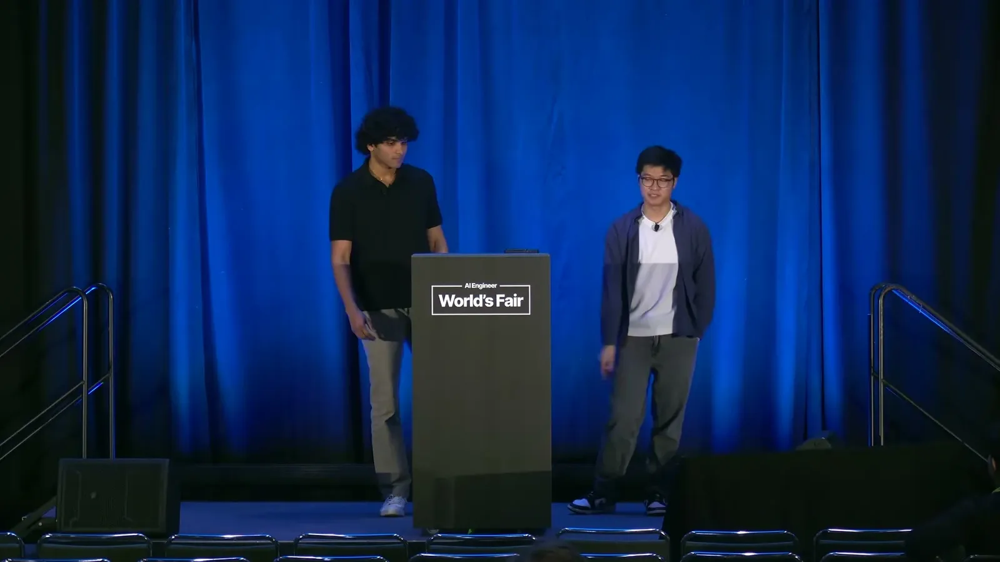
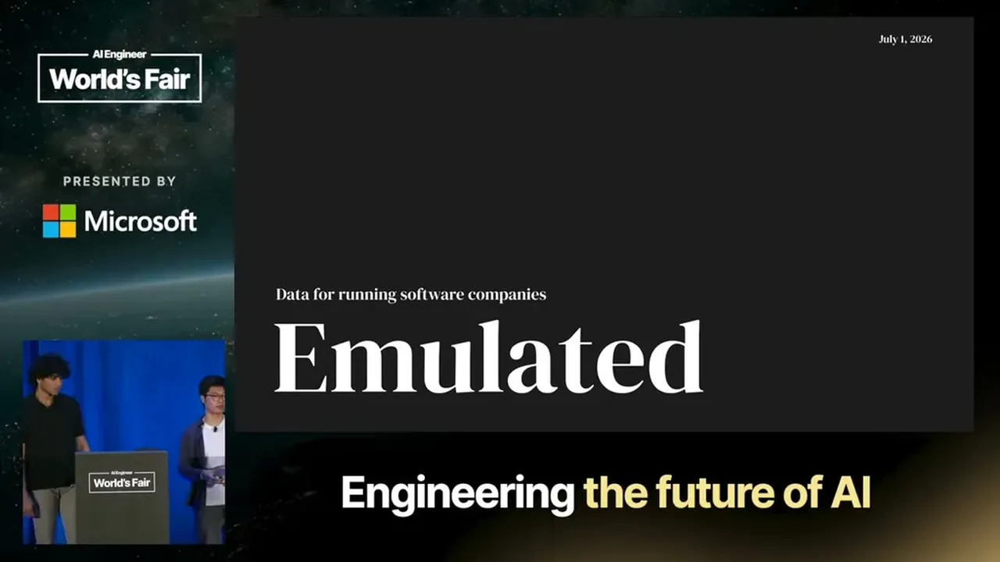
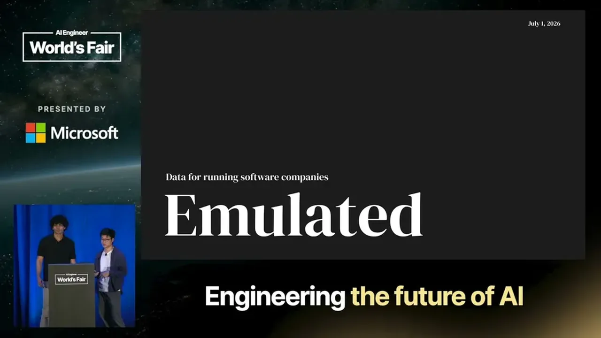
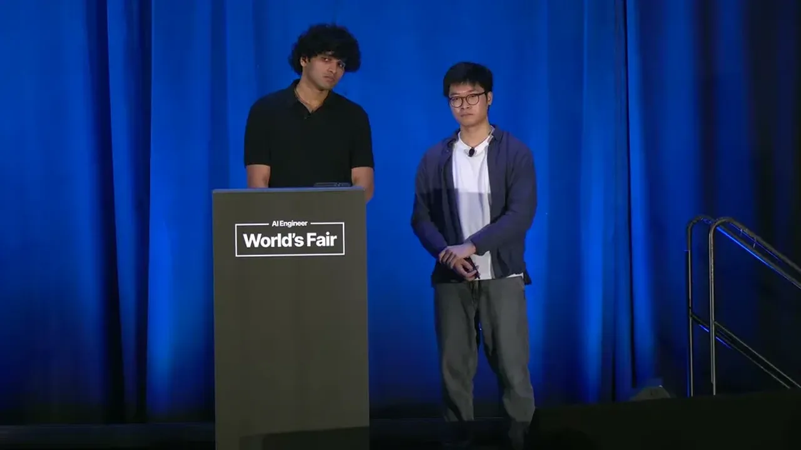
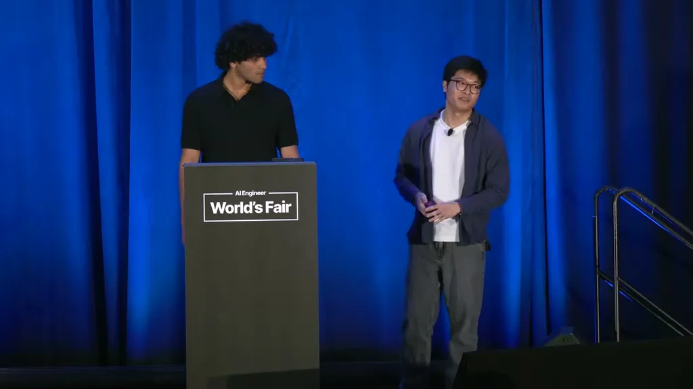
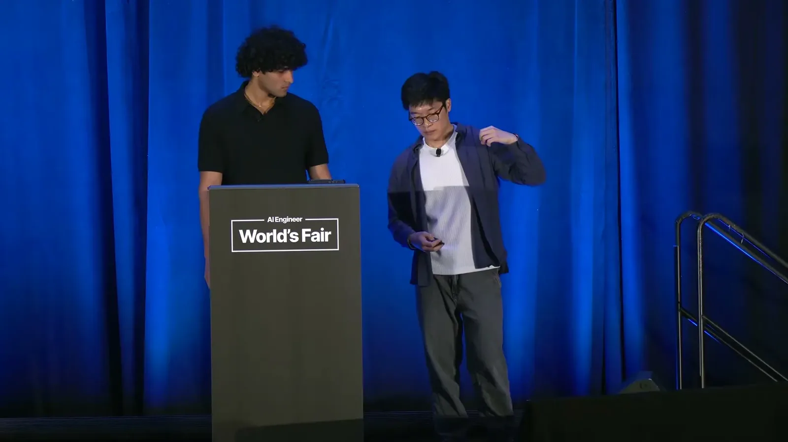
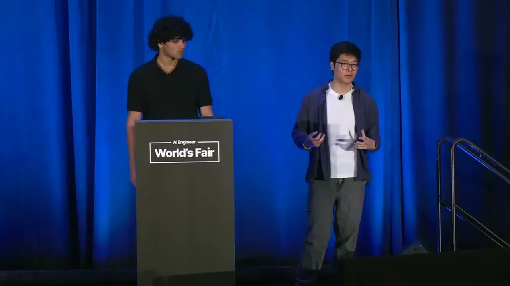
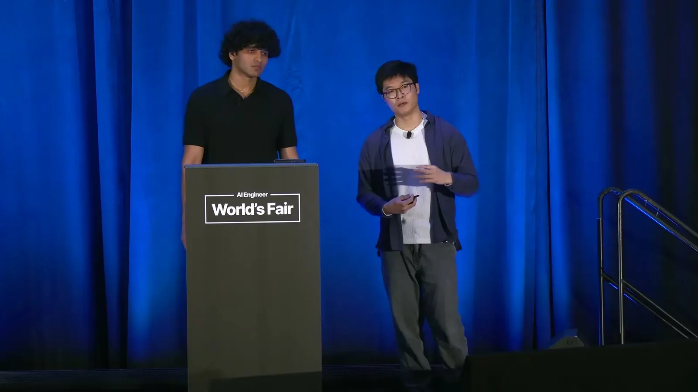
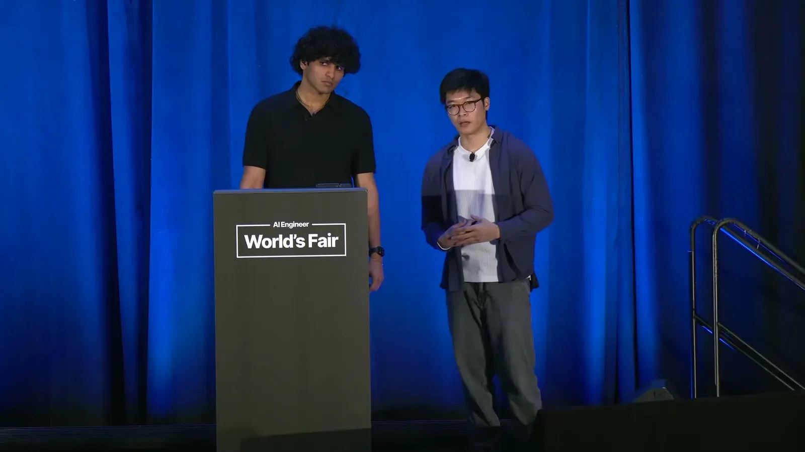
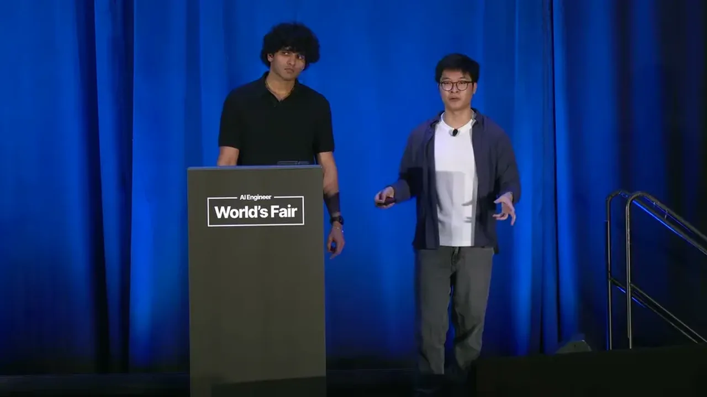
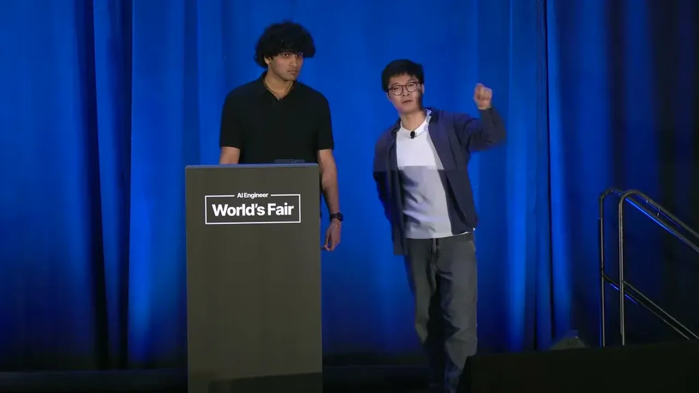
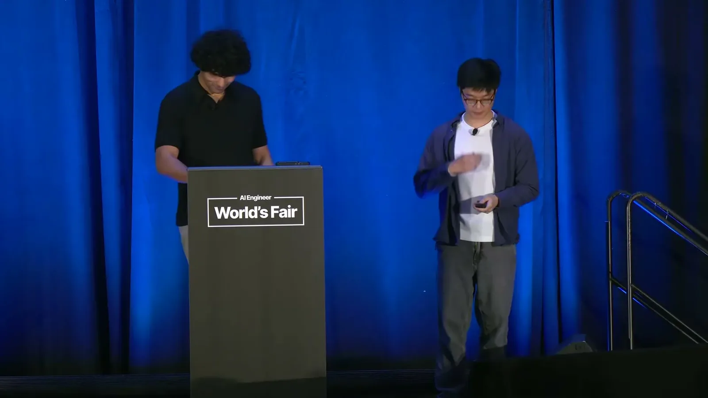
| Stance | Claim | t |
|---|---|---|
| asserts | The gap between what models can do and what's needed for infrastructure-level reasoning is characterized as a data gap, consistent with the general ML principle that model quality tracks data quality. | 02:02 |
| warns | Frontier coding benchmarks only test work within a codebase and miss the PM-style customer-facing work and iterative problem-solving that real software engineers do. | 02:35 |
| asserts | A DynamoDB outage a few months prior took down US East 1 and a large portion of the internet, motivating Emulated's focus on infrastructure-reasoning gaps in models. | 01:30 |
| asserts | The task Emulated wants agents to learn spans organizational context and infrastructure failures at scale, making it far more complex and long-horizon than a simple code diff. | 04:08 |
| warns | Single-node sandboxes cannot simulate real resource provisioning like EC2 or Cloud Run, which is where this style of environment starts to break down for infrastructure-level tasks. | 08:22 |
| asserts | Emulated's proposed direction is a multi-node sandbox with access to real cloud infrastructure and resources, informally called a 'cloud in a box.' | 10:57 |
| warns | Provisioning a full real-infrastructure stack, such as for AWS Lambda, can take hours, which is difficult to fit inside a post-training RL rollout. | 12:00 |
| asserts | Wang states that model capability has never regressed when higher-quality data was introduced, the basis for treating capability gaps as data problems. | 02:02 |
Machine-readable copy embedded in this page (script#ontology) and in the corpus ontology.